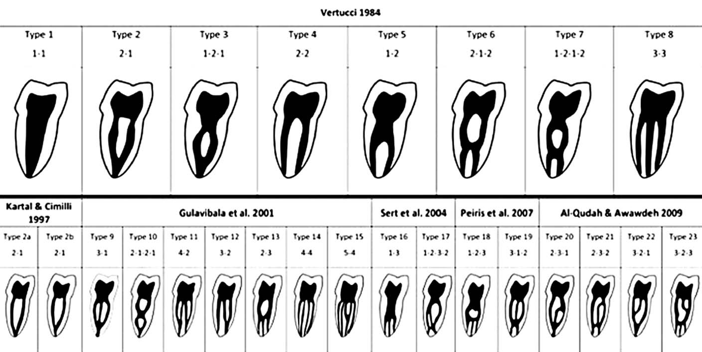
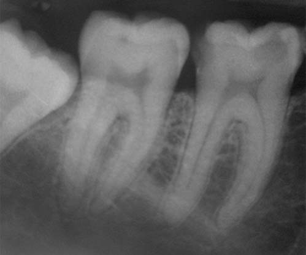
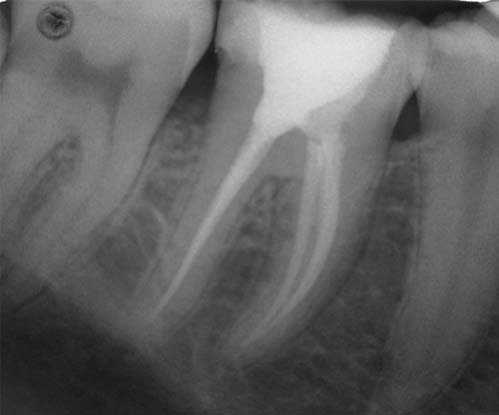
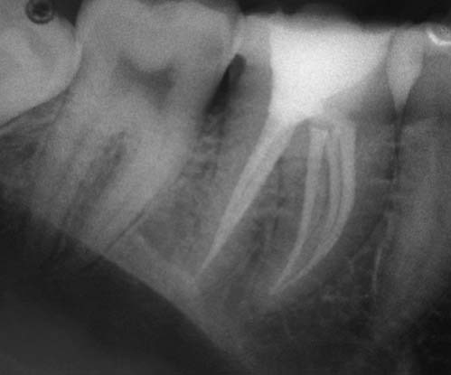
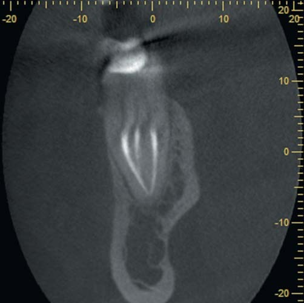
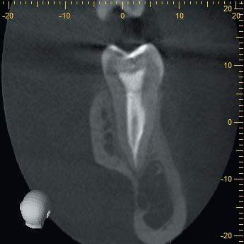
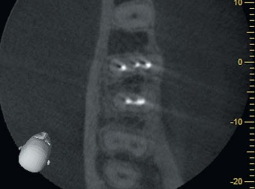

Ендодонтія · журнал «ДентАрт» 2015 №4
Ендодонтичне лікування першого моляра нижньої щелепи з варіативною морфологією
ENDODONTIC TREATMENT OF THE FIRST LOWER MOLAR TEETH WITH VARIATIVE MORPHOLOGY
Складність морфології системи кореневих каналів вважається однією з найсерйозніших проблем для ендодонтиста як з технічної, так і з мікробіологічної точок зору.1 Однією з головних причин неефективності ендодонтичного лікування є недостатнє видалення інфікованої пульпи та мікроорганізмів із системи кореневих каналів,2 зокрема у випадку невиявлення додаткових кореневих каналів. Тому для досягнення успіху у лікуванні необхідні фундаментальні знання внутрішньої анатомії коренів зубів.1
Недостатня увага до особливостей анатомії може призвести до незакінченого інструментального опрацювання, неадекватного очищення і наступного неякісного обтурування системи кореневих каналів, що може стати причиною клінічної невдачі.3 Без сумніву, для досягнення найкращого клінічного результату клініцист повинен знати загальноприйняті анатомічні, а також аномальні варіації морфології системи кореневих каналів зубів.4
Відомо, що у більшості випадків перший нижньощелеповий моляр має два корені з двома кореневими каналами у медіальному корені і одним каналом у дистальному.5,6 На жаль, досить часто стоматологи помилково зупиняються на досягнутому і не надають належного значення обстеженню дна пульпової камери і таким чином не виявляють додаткові кореневі канали.
Насправді морфологія першого нижньощелепового моляра може бути досить складною. За даними досліджень, третій канал у медіальному корені зустрічається від 1% до 18% випадків.6-13 Також було заявлено про випадок з чотирма кореневими каналами у медіальному корені першого нижньощелепового моляра.14 У більшості випадків вічко медіального серединного (ММ) каналу приховане у борозні між медіальним язиковим (ML) та медіальним щічним (MB) каналами, тому виникає необхідність обережного препарування цієї ділянки для його виявлення.
ММ канал може бути незалежним, з окремим апікальним отвором або з'єднуватися з MB або ML каналом,1,8 а діаметр додаткового каналу зазвичай менший.15 Згідно з дослідженнями, об'єднання трьох каналів в одному апікальному отворі є поширенішим анатомічним варіантом у порівнянні з випадками, коли кореневі канали закінчувалися трьома окремими апікальними отворами.16 При дослідженні морфології медіального кореня найчастіше виявлявся тип IV класифікації Vertucci — 52,3% та тип ІІ — 35% випадків. У дистальному корені найчастіше виявлявся тип І — 62,7%, тип ІІ — 14,5% та тип ІV — 12,4%.12 Повідомлялося також про випадки, в яких три кореневі канали були розташовані у дистальному корені.17,18
Класифікації морфології кореневих каналів

Класифікації морфології кореневих каналів: Vertucci (1984), Kartal & Cimilli (1997), Gulavibala et al. (2001), Sert et al. (2004), Peiris et al. (2007), Al-Qudah & Awawdeh (2009).
Клінічний випадок
У клініку звернувся 20-річний пацієнт зі скаргами на мимовільні короткотривалі болі, в тому числі і вночі, та інтенсивний біль, що виникав при вживанні холодних їжі чи напоїв у ділянці першого моляра нижньої щелепи праворуч упродовж останніх трьох днів. При обстеженні ротової порожнини:
- виявлено каріозні порожнини на оклюзійній та оклюзійно-дистальній поверхнях зуба 46;
- пальпація по перехідній складці у проекції верхівок коренів зуба 46 безболісна;
- перкусія зуба 46 безболісна;
- глибина зондування зубо-ясенної борозни — 2-2,5 мм;
- при проведенні температурної проби — тривала больова реакція;
- ЕОД — 22 мкА;
- на інтраоральній рентгенограмі зуба визначається значне вогнище демінералізації у безпосередній близькості до пульпи зуба та відсутність ознак ураження періапікальних тканин (фото 1).

Фото 1. Доопераційна рентгенограма зуба 46.
Діагноз: Гострий обмежений пульпіт зуба 46.
Ґрунтуючись на результатах суб'єктивного та об'єктивного обстеження, даних додаткових методів обстеження, пацієнтові було запропоновано консервативне ендодонтичне лікування.
Пацієнтові зроблене провідникове знеболення розчином убістезину форте з 1:100000 епінефрину (3M ESPE), накладено рабердам. Виконано антисептичне очищення зуба, некроектомію та створено доступ до вічок кореневих каналів за допомогою кулястих борів на довгій ніжці, конусних борів з безпечною заокругленою верхівкою та ультразвукових насадок Start-X (Dentsply, Maillefer). Пульпову камеру антисептично опрацьовано 6% розчином гіпохлориту натрію.
Дослідження дна пульпової камери проведено за допомогою ендодонтичного зонда DG-16 (Hu-Friedy) під оптичним збільшенням. У медіальному та дистальному коренях було по 2 кореневі канали. У той же час було виявлено борозенку між МВ і МL каналами. Вічко ММ каналу знайдено після препарування перешийка ультразвуковою насадкою №2 Start-X (Dentsply, Maillefer). Пульпову камеру виповнили 6% розчином гіпохлориту натрію.
Першочергово канали пройдено K-file №08, 10 (Dentsply, Maillefer). Робочу довжину визначали апекслокатором I-pex (NSK) та підтверджували рентгенологічно. Килимову доріжку створено K-file Nitiflex №15, 20 (Dentsply, Maillefer). Кореневі канали формували ротаційними Ni-Ti інструментами, ProTaper Universal, ProTaper Next та Profile (Dentsply, Maillefer) з допомогою ендодонтичного мотора Endo Mate DT (NSK). Кореневі канали поступово опрацьовували на робочу довжину інструментом X1 системи ProTaper Next (Dentsply, Maillefer), у коронковій третині МB та МL доповнюючи інструментом SX ProTaper Universal (Dentsply, Maillefer). Апікальну третину формували інструментами розміру 25, 30/4% конусності системи Profile (Dentsply, Maillefer). Закінчували препарування ручними K-file Nitiflex №30 (Dentsply, Maillefer). При кожній зміні інструмента проводилася іригація 6% розчином гіпохлориту натрію та підтверджувалася прохідність К-file №10.
Протокол передобтураційної іригації:
- 6% розчин гіпохлориту натрію активований з допомогою ультразвукової насадки тричі по 20 секунд з регулярною заміною розчину.
- 17% розчин EDTA активований з допомогою ультразвукової насадки двічі по 20 секунд з регулярною заміною розчину.
- 6% розчин гіпохлориту натрію активований з допомогою ультразвукової насадки впродовж 20 секунд.
- Проведено обробку стерильним фізіологічним розчином.
Кореневі канали просушено паперовими штифтами. Майстер-штифти дезінфіковано та припасовано на робочу довжину. Обтурацію проведено методом холодної латеральної конденсації гутаперчі із силером AH plus (Dentsply, DeTrey). Виконано тимчасове відновлення склоіономерним цементом. Проведено рентгенологічне дослідження якості пломбування кореневих каналів (фото 2, 3). Пацієнта скеровано на реставрацію зуба 46. Через 14 днів після пломбування каналів під час контрольного візиту скарги відсутні.


Фото 2, 3. Післяопераційні рентгенограми зуба 46.


Фото 4, 5. Поперечно-секційні зрізи медіального (фото 4) та дистального (фото 5) коренів зуба 46.
Оцінюючи післяобтураційні рентгенограми та результати КПКТ, ми виявили:
- аксіальний зріз КПКТ зуба 46 підтверджує наявність трьох кореневих каналів у медіальному та двох кореневих каналів у дистальному коренях (фото 6);
- у медіальній системі — три окремі кореневі канали з окремими вічками та однією апікальною верхівкою (фото 4), що відповідає (3-2-1) типу морфології кореневих каналів згідно з класифікацією Al-Qudah & Awawdeh (2009);
- тонка дентинна перетинка частково роз'єднує два дистальні кореневі канали, які закінчуються однією верхівкою, що відповідає ІІ (2-1) типу морфології кореневих каналів згідно з класифікацією Vertucci (1974) (фото 5).


Висновки
Фундаментальні знання морфології зуба, уміння інтерпретувати результати рентгенологічного дослідження, ретельна підготовка порожнини доступу та обстеження дна пульпової камери — необхідні передумови успішного ендодонтичного лікування. Ще перед початком втручання слід враховувати можливі морфологічні варіації та за необхідності використовувати такі методи дослідження, як комп'ютерна томографія, оптичне збільшення та спеціальні засоби для пошуку кореневих каналів, адже правильна діагностика, відповідне формування та очищення системи кореневих каналів з тривимірною обтурацією та якісним постендодонтичним відновленням зазвичай забезпечують успішний результат.6,19
Література
- Vertucci FJ. Root canal morphology and its relationship to endodontic procedures. Endodontic Topics. 2005 Mar;10(1):3-29.
- Garg AK., Tewari RK., Kumar A, Hashmi SH, Agrawal N, Mishra SK. Prevalence of three-rooted mandibular permanent first molars among the indian population (2010), JOE 36 (8): 1302-1306.
- Leonardo MR (1998). Aspectos anatomicos da cavidade pulpar: relacoes com o tratamento de canais radiculares. In: Leonardo MR, Leal JM (eds). Endodontia: tratamento de canais radiculares. 3rd ed. Sao Paulo: Panamericana;1998. Page 191.
- Zattar EI, Al-Busairi, Behbehani MJ (1990). Maxillary first premolars with three root canals: case report. Quintessence Int. 21(12): 1007-11.
- Vertucci FJ, Haddix JE, Britto LR. Tooth morphology and access cavity preparation. In: Cohen S, Hargreaves KM, editors. Pathways of the pulp. 9th ed. Louis MO USA: Mosby; 2006. pp. 148-232.
- De Carvalho M, Zuolo M. Orifice locating with a microscope. J Endod 2000; 26:532-4.
- Karapinar-Kazandag M, Basrani BR, Friedman S. The operating microscope enhances detection and negotiation of accessory mesial canals in mandibular molars. J Endod 2010; 36: 1289-94.
- Oliver Valencia de Pablo, Roberto Estevez, Manuel Peix Sanchez, Carlos Heiborn, Nestor Cobenca. Root anatomy and canal configuration of the permanent mandibular first molar: A systematic review / Elsevier, J Endod 2010, Vol. 36, №12, 12.2010 — P. 1919-1931.
- Wang W, Zheng Q, Zhou X, et al. Evaluation of the root and canal morphology of mandibular first permanent molars in a western Chinese population by cone-beam computed tomography. J Endod 2010; 11:1786-9.
- Leopoldo Forner Navarro, Arlinda Luzi, Amelia Almenar Garcia, Adela Hervas Garcia. Third canal in the mesial root of permanent mandibular first molars: review of the literature and presentation of 3 clinical reports and 2 in vitro studies. Med Oral Patol Oral Cir Bucal. 2007 Dec 1; 12(8): P: 605-9.
- Martinez-Berna A, Badanelli P (1985) Mandibular first molars with six root canals. J Endod 11(8):348-352.
- Holtzmann L. Root canal treatment of a mandibular first molar with three mesial root canals. Int Endod J. 1997 Nov;30(6):422-3.
- Schafer E., Bossmann K: Antimicrobial efficacy of chloroxylenol and chlorchexidine in the treatment of infected root canals. Am.J.Dent., 2001, 14, 233-237.